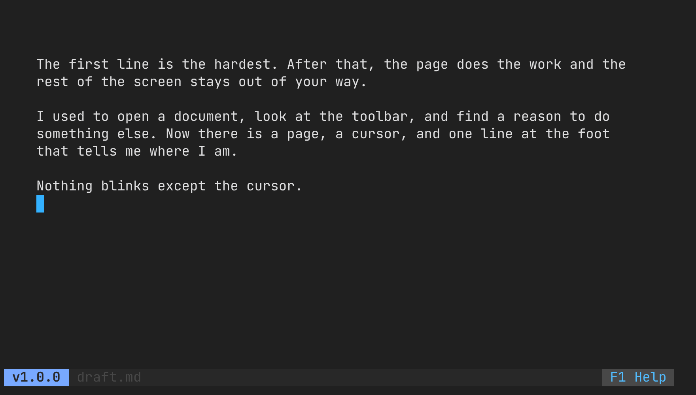
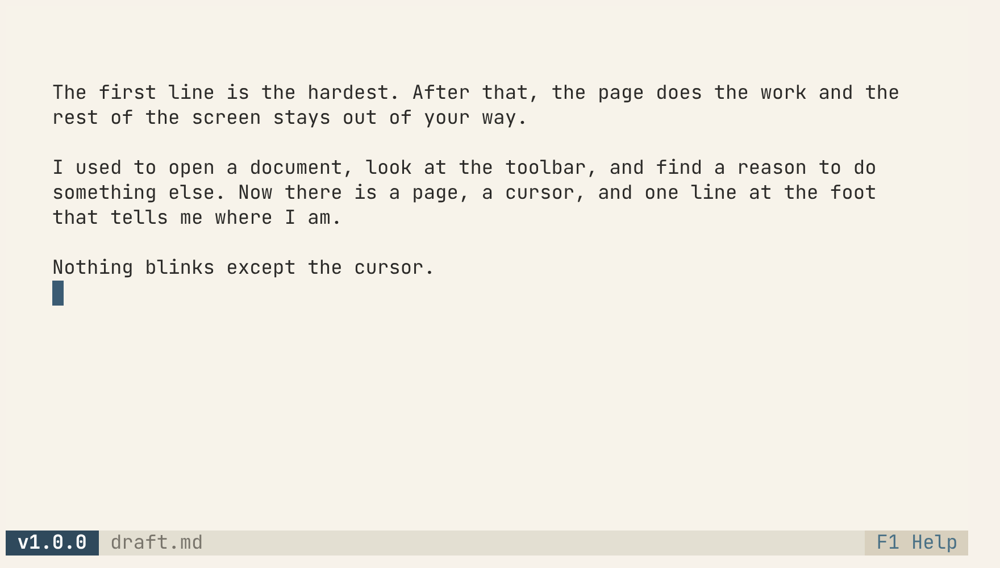
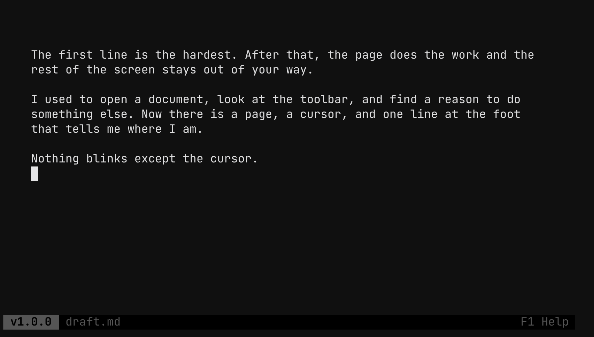

justwrite: A page, and nothing else.
Black screen, a centered page, and one line at the foot that tells you where you are.



What is this?
A text editor for writing prose, not code. There are no toolbars, no menus, no line numbers and no frame around the page. Just text, centered, never wider than 82 columns, because lines longer than that are hard to track back to.
Everything the editor knows about itself lives in a single line at the bottom: the version, the document, and the way into the help. This page is set the same way.
One static binary, no cgo, no display server. It runs anywhere you can open a terminal, including a headless writerdeck.
Install
Packages and binaries for Linux, macOS and Windows, for x86-64 and ARM, on the releases page. Swap amd64 for arm64 on a Raspberry Pi or an Apple Silicon Mac.
Debian, Ubuntu
sudo dpkg -i justwrite_*_linux_amd64.deb
Fedora, RHEL, openSUSE
sudo rpm -i justwrite_*_linux_amd64.rpm
Anywhere else
tar xzf justwrite_*_linux_amd64.tar.gz sudo install justwrite /usr/local/bin/
With Go
go install github.com/MawCeron/justwrite@latest
Then open a document: justwrite draft.md
Three themes
Cycle them with ← / → from the help panel (F1). NO_COLOR wins over all three. Try them on this page:
Learn them once
Every action is a keyboard shortcut; you learn them once and they disappear.
Undo works in bursts: one Ctrl+Z takes back a word, not a letter.
Details worth knowing
Saving is atomic. Writes go to a temporary file beside the document and are renamed into place, so a failed save leaves the previous draft intact.
Unsaved changes survive a crash. A hidden swap file is written every few seconds while there is something unsaved. If it is newer on the next open, justwrite offers to recover it.
Text is measured in terminal cells. CJK text, emoji and combining marks stay inside the page, and the cursor, selection and Backspace step over whole characters, never half of one.
Saving follows symlinks. A document opened through a link is written to what the link points at, and the link stays.
Only UTF-8 files open. Anything else, such as Latin-1 or Windows-1252, is refused with the reason instead of being rewritten with replacement characters on the next save.
The clipboard travels. Copying works over SSH and inside tmux, with no display server.
It notices when a file changes. If the file changed on disk, Ctrl+S stops and offers three ways out: reload, overwrite, or save as.